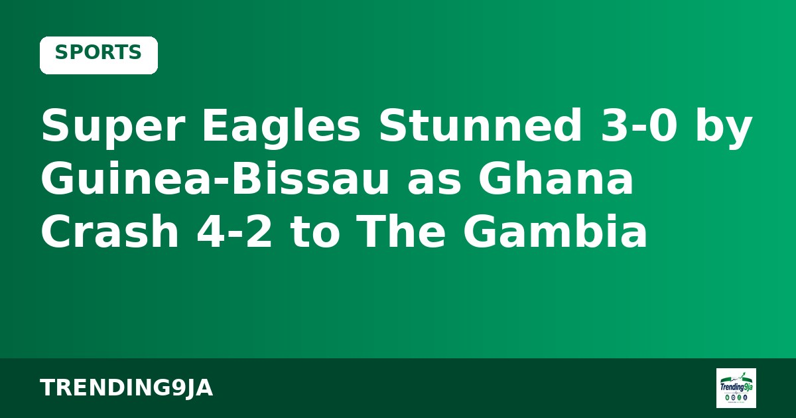

Poland Hand Nigeria Defeat in U-17 Women’s World Cup Opener
Nigeria’s under-17 women’s team lose their opening match of the tournament.

The Nigeria Premier Football League has fined Doma United ₦5.25 million and ordered the club to play its next three home matches behind closed doors for failing to provide adequate security.
Sources: Blueprint
← More Sports stories
Nigeria’s under-17 women’s team lose their opening match of the tournament.

Nine players make debuts; Chelle hails response after injury crisis and Bissau loss.

Super Eagles coach Eric Chelle faces an injury crisis with Ndidi out and several players withheld by clubs ahead of the Russia friendly.

Nigeria started seven Premier League players and still lost; Ghana threw bottles, then lost their coach.